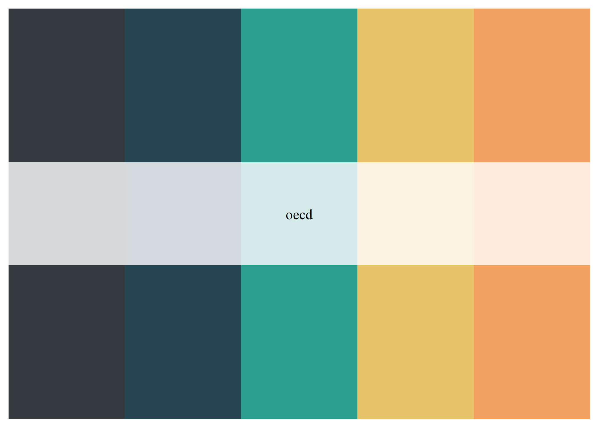

WP6RTools provides a collection of tools to streamline the production process of data analysis products. At the moment it includes two themes for {ggplot} graphs and a color palette that emulates the OECD colors.
Installation
Since this package is meant for internal use only, it will not be distributed with CRAN. Simply type the following commands into your R-Studio console to install the package from GitHub!
install.packages("remotes") # Lets you install packages from other sources than CRAN
remotes::install_github("BBieri/WP6RTools")OECD themes
As mentionned above, the package currently contains two, OECD-styled, themes for {ggplot}. Both themes are essentially modified versions of the theme_ipsum() theme of the {hrbrthemes}.
Let’s plot some things with the theme_oecd() light theme.
# Load required packages
library(WP6RTools) # Our package
library(dplyr) # Manipulation tools for dataframes. Part of the Tidyverse.
#>
#> Attaching package: 'dplyr'
#> The following objects are masked from 'package:stats':
#>
#> filter, lag
#> The following objects are masked from 'package:base':
#>
#> intersect, setdiff, setequal, union
library(ggplot2) #
library(hrbrthemes)
# A scatter plot
ggplot(mtcars, aes(mpg, wt)) +
geom_point() +
labs(x = "Fuel efficiency (mpg)", y = "Weight (tons)",
title = "Seminal ggplot2 scatterplot example",
subtitle = "A plot that is only useful for demonstration purposes",
caption = "Source: somewhere on the web.") +
theme_oecd()
# A tidy histogram
count(mpg, class) %>%
ggplot(aes(class, n)) +
geom_col(fill = oecd_palette("oecd", 7, type = "continuous")) +
geom_text(aes(label = n), nudge_y = 3) +
labs(x = "Vehicle Category", y = "Number of Vehicles",
title = "Seminal ggplot2 bar chart example",
subtitle = "A plot that is only useful for demonstration purposes",
caption = "Source: somewhere on the web") +
theme_oecd(grid = "Y") +
theme(axis.text.y = element_blank())
Looking great! Let’s check out how these plots look like with the theme_oecd_dark() dark theme.
# Load required packages
library(WP6RTools)
library(dplyr)
library(ggplot2)
library(hrbrthemes)
# A scatter plot
ggplot(mtcars, aes(mpg, wt)) +
geom_point() +
labs(x = "Fuel efficiency (mpg)", y = "Weight (tons)",
title = "Seminal ggplot2 scatterplot example",
subtitle = "A plot that is only useful for demonstration purposes",
caption = "Source: somewhere on the web.") +
theme_oecd_dark()
# A tidy histogram
count(mpg, class) %>%
mutate(pct=n/sum(n)) %>% # Create a new percentage column
ggplot(aes(class, pct)) + # Create the graph
geom_col() +
scale_y_percent() +
labs(y="Proportion", x="Vehicle category",
title="Seminal ggplot2 column chart\nexample with percents",
subtitle="A plot that is only useful for demonstration purposes",
caption="Source: somewhere on the web.") +
theme_oecd_dark(grid="Y")
OECD palette generator
WP6Rtools also includes its very own palette generation tool based on the included list oecd_palettes. You can generate both discrete color palettes which will take the colors of the aforementionned list or continuous palettes which will interpolate colors between the ones specified in the oecd_palettes list.
# Discrete palette
discrete <- oecd_palette("oecd", 5, type = "discrete")
discrete
# Continuous palette
continuous <- oecd_palette("oecd", 15, type = "continuous")
continuous
Miscellaneous OECD scraping functions
These functions are intended to produce quickly the list of OECD countries, OECD Secretary Generals, and data about these two concepts.
head(oecd_members())
#> # A tibble: 6 x 8
#> ID Country Application Negotiations Invitation Membership `Geographic loc~
#> <chr> <chr> <date> <date> <date> <date> <chr>
#> 1 AUS Austral~ NA NA NA 1971-06-07 Oceania
#> 2 AUT Austria NA NA NA 1961-09-29 Europe
#> 3 BEL Belgium NA NA NA 1961-09-13 Europe
#> 4 CAN Canada NA NA NA 1961-04-10 North America
#> 5 CHL Chile NA 2007-05-16 2009-12-15 2010-05-07 South America
#> 6 COL Colombia 2011-01-24 2013-05-30 2018-05-25 2020-04-28 South America
#> # ... with 1 more variable: Notes <chr>
head(oecd_member_metrics())
#> # A tibble: 6 x 15
#> ID Country `Area(km2)2017` `Population 2017` `GDP (PPP) (Intl. $)2017`
#> <chr> <chr> <dbl> <dbl> <dbl>
#> 1 AUS Australia 7741220 24598933 1192065505301
#> 2 AUT Austria 83879 8809212 461582926400
#> 3 BEL Belgium 30530 11372068 544041974958
#> 4 CAN Canada 9984670 36708083 1714447151944
#> 5 CHL Chile 756096 18054726 444777637169
#> 6 COL Colombia 1141748 48901066 709420539907
#> # ... with 10 more variables: GDP (PPP)per capita(Intl. $)2017 <dbl>,
#> # Incomeinequality 2008-2016(latest available) <dbl>, HDI2019 <dbl>,
#> # FSI2019 <dbl>, RLI2020 <dbl>, CPI2019 <dbl>, IEF2020 <dbl>, GPI2019 <dbl>,
#> # WPFI2019 <dbl>, DI2019 <dbl>
head(oecd_secretary())
#> # A tibble: 6 x 5
#> ID `Secretary-General` Beg End `Country of origin`
#> <chr> <chr> <date> <date> <chr>
#> 1 1 Thorkil Kristensen 1961-09-30 1969-09-30 Denmark
#> 2 2 Emiel van Lennep 1969-10-01 1984-09-30 Netherlands
#> 3 3 Jean-Claude Paye 1984-10-01 1994-09-30 France
#> 4 — Staffan Sohlman (interim) 1994-10-01 1994-11-01 Sweden
#> 5 3 Jean-Claude Paye 1994-11-01 1996-05-31 France
#> 6 4 Donald Johnston 1996-06-01 2006-05-31 CanadaIssues, Improvements and Questions
Have you experienced an issue while using the package or have a question about it? Open an issue. Do you want to suggest improvement? Then open up a PR.
Final Notes
Note that the present R-Package is in no way related to or endorsed by the OECD.
Please note that the WP6RTools project is released with a Contributor Code of Conduct. By contributing to this project, you agree to abide by its terms.